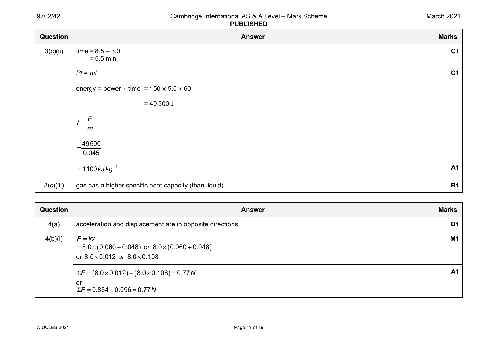
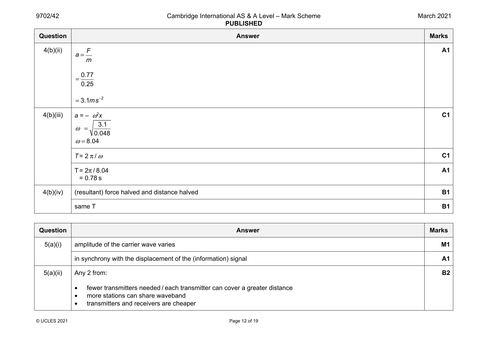
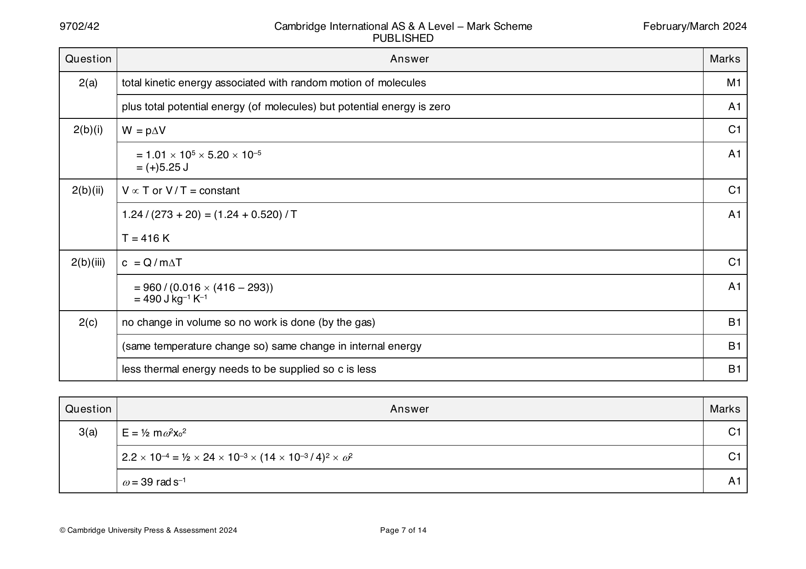
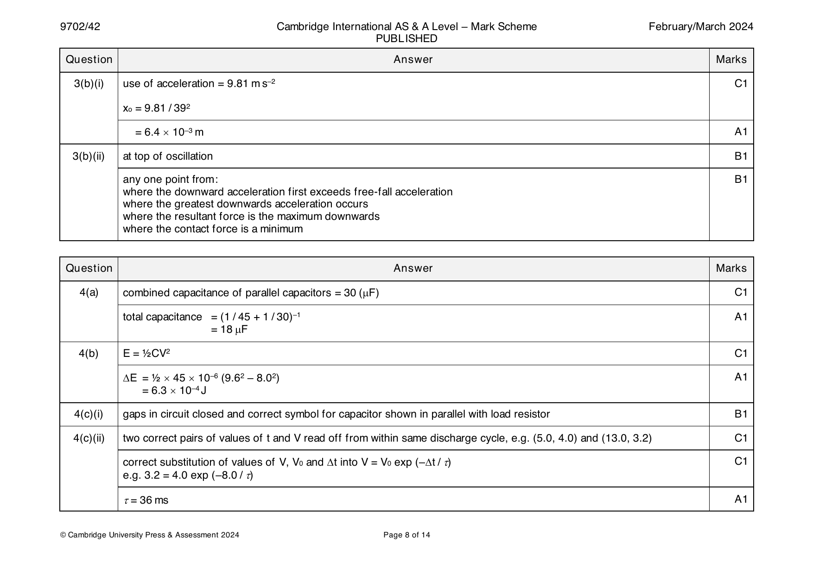

Try the new view →
9702-2021-m-42-q04
March 2021 · Paper 42 · Question 4 · 9 marks


4(a) acceleration and displacement are in opposite directions B1
4(b)(i) F =kx M1
( ) ( )
=8.0× 0.060−0.048 or 8.0× 0.060+0.048
or 8.0×0.012 or 8.0×0.108
( ) ( )
ΣF = 8.0×0.012 − 8.0×0.108 =0.77 N A1
or
ΣF =0.864−0.096=0.77 N
© UCLES 2021 Page 11 of 19
4(b)(ii) F A1
a=
m
0.77
=
0.25
=3.1 m s −2
4(b)(iii) a = – ω2x C1
3.1
ω =
0.048
ω=8.04
T = 2 π / ω C1
T = 2π / 8.04 A1
= 0.78 s
4(b)(iv) (resultant) force halved and distance halved B1
same T B1
Question Answer Marks
Official mark scheme pages: 11, 12 · source PDF URL
9702-2021-mj-41-q03
May/June 2021 · Paper 41 · Question 3 · 8 marks
3(a) acceleration (directly) proportional to displacement B1
acceleration is in opposite direction to displacement B1
3(b) ω2 = 2k / m and ω = 2πf C1
(2πf)2 = (2 × 130) / 0.84 C1
f = 2.8 Hz A1
3(c)(i) resonance B1
3(c)(ii) oscillator supplies energy (continuously) B1
energy of trolley constant so energy must be dissipated B1
or
without loss of energy the amplitude would continuously increase
Question Answer Marks
Official mark scheme pages: 10 · source PDF URL
9702-2021-mj-42-q03
May/June 2021 · Paper 42 · Question 3 · 9 marks
3(a) acceleration in opposite direction to displacement shown by – sign B1
g / L is constant M1
(so) acceleration is (directly) proportional to displacement A1
3(b) ω2 = g / L C1
ω = 2π / T C1
or
ω = 2πf and f = 1 / T
(2π / T)2 = 9.81 / 0.18 A1
T = 0.85 s
3(c) energy ∝ x 2 C1
0
(after 3 cycles,) amplitude = (0.94)3x C1
0
= 0.83x
0
ratio final energy / initial energy = 0.832 A1
= 0.69
© UCLES 2021 Page 10 of 19
Official mark scheme pages: 10 · source PDF URL
9702-2021-mj-43-q03
May/June 2021 · Paper 43 · Question 3 · 8 marks
3(a) acceleration (directly) proportional to displacement B1
acceleration is in opposite direction to displacement B1
3(b) ω2 = 2k / m and ω = 2πf C1
(2πf)2 = (2 × 130) / 0.84 C1
f = 2.8 Hz A1
3(c)(i) resonance B1
3(c)(ii) oscillator supplies energy (continuously) B1
energy of trolley constant so energy must be dissipated B1
or
without loss of energy the amplitude would continuously increase
Question Answer Marks
Official mark scheme pages: 10 · source PDF URL
9702-2021-on-41-q04
Oct/Nov 2021 · Paper 41 · Question 4 · 11 marks
4(a)(i) 5.0 cm A1
4(a)(ii) ω = 2π / T C1
or
ω = 2πf and f = 1 / T
ω = 2π / 4.0 A1
= 1.6 rad s–1
4(a)(iii) v = ωx C1
0 0
= 1.57 × 5.0 A1
= 7.9 cm s–1
4(b) • initial pull was to the right B3
• distance from X to trolley (at equilibrium) is 20 cm
• period is 4.0 s
• initial motion undamped
• motion becomes damped at/from 12 s
• damping is light
• maximum speed at 1s, 3s, etc. / stationary at 2s, 4s, etc.
Any three points, 1 mark each
4(c) sketch: closed loop encircling (20, 0) B1
minimum L shown as 15 cm and maximum L shown as 25 cm B1
minimum v shown as –7.9 cm s–1 and maximum v shown as +7.9 cm s–1 B1
© UCLES 2021 Page 10 of 15
Official mark scheme pages: 10 · source PDF URL
9702-2021-on-42-q04
Oct/Nov 2021 · Paper 42 · Question 4 · 7 marks
4(a) straight line through the origin B1
negative gradient B1
4(b) a = (–)ω2x and T = 2π / ω C1
e.g. ω = √(0.80 / 0.12) (any correct pair of values of a and x) C1
( = 2.58 rad s–1)
T = 2π / 2.58 A1
= 2.4 s
4(c)(i) Point labelled P at one end of the line B1
4(c)(ii) Point labelled Q at displacement with magnitude more than half but less than maximum B1
© UCLES 2021 Page 10 of 19
Official mark scheme pages: 10 · source PDF URL
9702-2021-on-43-q04
Oct/Nov 2021 · Paper 43 · Question 4 · 11 marks
4(a)(i) 5.0 cm A1
4(a)(ii) ω = 2π / T C1
or
ω = 2πf and f = 1 / T
ω = 2π / 4.0 A1
= 1.6 rad s–1
4(a)(iii) v = ωx C1
0 0
= 1.57 × 5.0 A1
= 7.9 cm s–1
4(b) • initial pull was to the right B3
• distance from X to trolley (at equilibrium) is 20 cm
• period is 4.0 s
• initial motion undamped
• motion becomes damped at/from 12 s
• damping is light
• maximum speed at 1s, 3s, etc. / stationary at 2s, 4s, etc.
Any three points, 1 mark each
4(c) sketch: closed loop encircling (20, 0) B1
minimum L shown as 15 cm and maximum L shown as 25 cm B1
minimum v shown as –7.9 cm s–1 and maximum v shown as +7.9 cm s–1 B1
© UCLES 2021 Page 10 of 15
Official mark scheme pages: 10 · source PDF URL
9702-2022-m-42-q03
March 2022 · Paper 42 · Question 3 · 10 marks
3(a) upthrust, weight B1
3(b) upthrust greater than weight so (resultant force is) upwards B1
3(c)(i) A, g and ρ all constant so F ∝ x B1
minus sign means F and x are in opposite directions B1
3(c)(ii) F Agρx M1
(a = so) a = (−)
m m
Agρ Agρ A1
so ω2 = hence ω =
m m
3(d)(i) damping due to viscous forces B1
3(d)(ii) ( E = )1 mω2x 2 C1
2 0
ω2 = (–) gradient C1
( E = )1 mω2(x 2 − x 2) A1
2 1 2
= 1 ×0.57 ×(2.3 )(0.0202 −0.0162)
2 0.020
= 4.7 ×10 −3 J
© UCLES 2022 Page 8 of 17
Official mark scheme pages: 8 · source PDF URL
9702-2022-mj-41-q04
May/June 2022 · Paper 41 · Question 4 · 8 marks
4(a) straight line through origin shows that a is proportional to x B1
negative gradient shows that a is in opposite direction to x B1
4(b)(i) a = 2x C1
0 0
or
a = – 2x
or
2 = – gradient
= (0.40 / 0.050) A1
= 2.8 rad s–1
4(b)(ii) k = 2L C1
= 2.82 1.24
= 9.7 m s–2 A1
4(c) (increasing L causes) to decrease M1
or
energy (= ½ m2x 2) = ½ mkx 2 / L (and L increases)
0 0
so amplitude increases A1
© UCLES 2022 Page 10 of 16
Official mark scheme pages: 10 · source PDF URL
9702-2022-mj-42-q04
May/June 2022 · Paper 42 · Question 4 · 8 marks
4(a) oscillations (of object) at maximum amplitude B1
when driving frequency equals natural frequency (of object) B1
4(b)(i) T = 2 / C1
= 2 / 5.0 A1
= 0.40 s
4(b)(ii) displacement scale labelled –1.0, –0.5, (0), 0.5, 1.0 on the 2 cm tick marks B1
t scale labelled 0.2, 0.4, 0.6, 0.8, 1.0, 1.2 on the 2 cm tick marks B1
4(b)(iii) ϕ = 2t / T C1
= 2 0.10 / 0.40 or 2 0.30 / 0.40
= 1.6 rad or 4.7 rad A1
© UCLES 2022 Page 10 of 16
Official mark scheme pages: 10 · source PDF URL
9702-2022-mj-43-q04
May/June 2022 · Paper 43 · Question 4 · 8 marks
4(a) straight line through origin shows that a is proportional to x B1
negative gradient shows that a is in opposite direction to x B1
4(b)(i) a = 2x C1
0 0
or
a = – 2x
or
2 = – gradient
= (0.40 / 0.050) A1
= 2.8 rad s–1
4(b)(ii) k = 2L C1
= 2.82 1.24
= 9.7 m s–2 A1
4(c) (increasing L causes) to decrease M1
or
energy (= ½ m2x 2) = ½ mkx 2 / L (and L increases)
0 0
so amplitude increases A1
© UCLES 2022 Page 10 of 16
Official mark scheme pages: 10 · source PDF URL
9702-2022-on-41-q03
Oct/Nov 2022 · Paper 41 · Question 3 · 11 marks
3(a) a = – 2x M1
a = acceleration, x = displacement from equilibrium position and = angular frequency A1
3(b)(i) x = 0.12 m A1
0
3(b)(ii) v = (x 2 – x2) C1
0
two (x, v) pairs correctly read from Fig. 3.2 (one may be (x , 0) or value of x from (i))
0 0
e.g. 0.20 = (0.122 – 0) leading to = 1.7 rad s–1 A1
3(b)(iii) E = ½M 2x 2 C1
0
0.050 = ½ M 1.672 0.122 A1
M = 2.5 kg
or
(E ) = ½Mv 2 (C1)
K max 0
0.050 = ½ M 0.202 (A1)
M = 2.5 kg
3(c)(i) loss of (total) energy (of system) B1
due to resistive forces B1
3(c)(ii) closed loop surrounding the origin with maximum x at ± 0.060 m passing through v = 0 B1
maximum velocity shown as ± 0.10 m s–1 passing through x = 0 B1
© UCLES 2022 Page 8 of 15
Official mark scheme pages: 8 · source PDF URL
9702-2022-on-42-q04
Oct/Nov 2022 · Paper 42 · Question 4 · 10 marks
4(a)(i) x = 8.0 cm A1
0
4(a)(ii) = 2 / T C1
= 2 / 4.0 = 1.6 rad s–1 A1
4(a)(iii) E = ½m 2x 2 C1
0
= ½ 36 1.62 0.0802 C1
= 0.29 J A1
4(b) dome-shaped curve, starting and ending at E = 0 B1
K
maximum E shown as 0.29 J B1
K
position of peak shown at h = 10.0 cm B1
line intercepts h-axis at h = 2.0 cm and at h = 18.0 cm B1
© UCLES 2022 Page 9 of 16
Official mark scheme pages: 9 · source PDF URL
9702-2022-on-43-q03
Oct/Nov 2022 · Paper 43 · Question 3 · 11 marks
3(a) a = – 2x M1
a = acceleration, x = displacement from equilibrium position and = angular frequency A1
3(b)(i) x = 0.12 m A1
0
3(b)(ii) v = (x 2 – x2) C1
0
two (x, v) pairs correctly read from Fig. 3.2 (one may be (x , 0) or value of x from (i))
0 0
e.g. 0.20 = (0.122 – 0) leading to = 1.7 rad s–1 A1
3(b)(iii) E = ½M 2x 2 C1
0
0.050 = ½ M 1.672 0.122 A1
M = 2.5 kg
or
(E ) = ½Mv 2 (C1)
K max 0
0.050 = ½ M 0.202 (A1)
M = 2.5 kg
3(c)(i) loss of (total) energy (of system) B1
due to resistive forces B1
3(c)(ii) closed loop surrounding the origin with maximum x at ± 0.060 m passing through v = 0 B1
maximum velocity shown as ± 0.10 m s–1 passing through x = 0 B1
© UCLES 2022 Page 8 of 15
Official mark scheme pages: 8 · source PDF URL
9702-2023-m-42-q03
March 2023 · Paper 42 · Question 3 · 10 marks
3(a) P: total energy B2
Q: potential energy
R: kinetic energy
3(b) E = ½m2x 2 or E = ½mv 2 and v = x C1
0 0 0 0
6.410−3 = 1 0.13020.0152 C1
2
(2 = 438)
( = 20.9)
T = 2 / C1
= 2 / 20.9 A1
= 0.30 s
3(c)(i) resistive forces B1
3(c)(ii) 0.926 C1
decrease in energy = 6.4 – (6.4 0.926) A1
= 2.5 mJ
3(c)(iii) light damping because the amplitude of oscillations gradually reduces B1
or
light damping because the system still oscillates
© UCLES 2023 Page 9 of 18
Official mark scheme pages: 9 · source PDF URL
9702-2023-mj-42-q04
May/June 2023 · Paper 42 · Question 4 · 11 marks
4(a)(i) = 2f C1
f = 9.7 / 2 A1
= 1.5 Hz
4(a)(ii) amplitude = √(11.6) = 3.4 cm A1
4(a)(iii) a = 2x C1
0 0
= 9.72 3.4 10–2 A1
= 3.2 m s–2
4(b) sketch: straight line through the origin with negative gradient B1
line with negative gradient passing through (+3.4, –a ) and (–3.4, +a ) B1
0 0
line with ends at x = 3.4 cm and a = a B1
0
4(c) sum of potential energy and kinetic energy is constant B1
at maximum displacement, kinetic energy is zero B1
or
at maximum displacement, potential energy is maximum
at zero displacement, kinetic energy is maximum B1
or
at zero displacement, potential energy is minimum
© UCLES 2023 Page 9 of 15
Official mark scheme pages: 9 · source PDF URL
9702-2023-on-41-q04
Oct/Nov 2023 · Paper 41 · Question 4 · 9 marks
4(a) (motion in which) acceleration is (directly) proportional to displacement B1
(motion in which): B1
acceleration is (always) in the opposite direction to displacement
or
acceleration is (always) directed towards a fixed point
4(b)(i) = 2 / T C1
= 2 / 3.0 A1
= 2.1 rad s–1
4(b)(ii) E = ½m2x 2 C1
0
= ½ 0.81 2.12 0.0362 A1
= 2.3 10–3 J
4(c) sketch: line starting at (0, 0.036) and not reaching x = 0.036 m at any other time B1
smooth curve, with no sudden changes in gradient, showing continuously decreasing magnitude of x from B1
maximum displacement at t = 0 to final displacement of zero where the gradient is also zero
displacement reaches final value of zero between t = 0.75 s and t = 3.0 s at the latest B1
© UCLES 2023 Page 10 of 16
Official mark scheme pages: 10 · source PDF URL
9702-2023-on-42-q04
Oct/Nov 2023 · Paper 42 · Question 4 · 11 marks
4(a)(i) amplitude = ½ 7.2 10–15 A1
= 3.6 10–15 m
4(a)(ii) = 2 / (0.20 10–6) A1
= 3.1 107 rad s–1
4(a)(iii) v = x C1
0 0
v = 3.1 107 3.6 10–15 = 1.1 10–7 m s–1 A1
0
4(b)(i) I = nAv e C1
0 0
= 8.5 1028 4.3 10–4 1.1 10–7 1.60 10–19
= 0.64 A A1
4(b)(ii) sketch: two cycles of sinusoidal curve of amplitude I and period 0.20 s B1
0
correct phase, with I = +I at t = 0 B1
0
4(b)(iii) equation of form I = I cos t M1
0
value of I used matches answer to (b)(i) and value of used matches answer to (a)(ii) A1
0
[if (a)(ii) and (b)(i) correct then I = 0.64 cos (3.1 107 t)]
4(b)(iv) I = I / √2 A1
r.m.s. 0
= 0.64 / √2
= 0.45 A
© UCLES 2023 Page 9 of 15
Official mark scheme pages: 9 · source PDF URL
9702-2023-on-43-q04
Oct/Nov 2023 · Paper 43 · Question 4 · 9 marks
4(a) (motion in which) acceleration is (directly) proportional to displacement B1
(motion in which): B1
acceleration is (always) in the opposite direction to displacement
or
acceleration is (always) directed towards a fixed point
4(b)(i) = 2 / T C1
= 2 / 3.0 A1
= 2.1 rad s–1
4(b)(ii) E = ½m2x 2 C1
0
= ½ 0.81 2.12 0.0362 A1
= 2.3 10–3 J
4(c) sketch: line starting at (0, 0.036) and not reaching x = 0.036 m at any other time B1
smooth curve, with no sudden changes in gradient, showing continuously decreasing magnitude of x from B1
maximum displacement at t = 0 to final displacement of zero where the gradient is also zero
displacement reaches final value of zero between t = 0.75 s and t = 3.0 s at the latest B1
© UCLES 2023 Page 10 of 16
Official mark scheme pages: 10 · source PDF URL
9702-2024-m-42-q03
March 2024 · Paper 42 · Question 3 · 7 marks


3(a) E = ½ m2x 2 C1
o
2.2 10–4 = ½ 24 10–3 (14 10–3 / 4)2 2 C1
= 39 rads–1 A1
© Cambridge University Press & Assessment 2024 Page 7 of 14
3(b)(i) use of acceleration = 9.81 m s–2 C1
x = 9.81 / 392
o
= 6.4 10–3 m A1
3(b)(ii) at top of oscillation B1
any one point from: B1
where the downward acceleration first exceeds free-fall acceleration
where the greatest downwards acceleration occurs
where the resultant force is the maximum downwards
where the contact force is a minimum
Question Answer Marks
Official mark scheme pages: 7, 8 · source PDF URL
9702-2024-mj-41-q04
May/June 2024 · Paper 41 · Question 4 · 8 marks
4(a) oscillation (of object) at maximum amplitude B1
when driving frequency = natural frequency (of system) B1
4(b)(i) light damping B1
4(b)(ii) oscillations (of ball) lose energy B1
(due to) resistive forces (acting on ball) B1
4(b)(iii) frequency = 1 / 0.25 A1
= 4.0 Hz
4(c) curve showing a maximum amplitude at a single non-zero frequency B1
single maximum amplitude shown at 4.0 Hz B1
© Cambridge University Press & Assessment 2024 Page 9 of 15
Official mark scheme pages: 9 · source PDF URL
9702-2024-mj-42-q04
May/June 2024 · Paper 42 · Question 4 · 9 marks
4(a) straight line through the origin shows that a is proportional to x B1
negative gradient shows that a and x are (always) in opposite directions B1
4(b)(i) a = –2x A1
= √(2A / 3Y)
4(b)(ii) v = x C1
0 0
= 3Y √(2A / 3Y) A1
= √(6AY)
4(b)(iii) E = ½ m2x 2 C1
0
= ½ m (2A / 3Y) (3Y)2 A1
= 3mAY
4(c) = 2 / T C1
( = 2 / 0.75)
x = 1.8 sin (8.4 t) A1
© Cambridge University Press & Assessment 2024 Page 9 of 16
Official mark scheme pages: 9 · source PDF URL
9702-2024-mj-43-q04
May/June 2024 · Paper 43 · Question 4 · 8 marks
4(a) oscillation (of object) at maximum amplitude B1
when driving frequency = natural frequency (of system) B1
4(b)(i) light damping B1
4(b)(ii) oscillations (of ball) lose energy B1
(due to) resistive forces (acting on ball) B1
4(b)(iii) frequency = 1 / 0.25 A1
= 4.0 Hz
4(c) curve showing a maximum amplitude at a single non-zero frequency B1
single maximum amplitude shown at 4.0 Hz B1
© Cambridge University Press & Assessment 2024 Page 9 of 15
Official mark scheme pages: 9 · source PDF URL
9702-2024-on-41-q04
Oct/Nov 2024 · Paper 41 · Question 4 · 11 marks
4(a) (motion in which) acceleration is (directly) proportional to displacement B1
(motion in which): B1
acceleration is (always) in the opposite direction to displacement
or
acceleration is (always) directed towards a fixed point
4(b)(i) amplitude = (9.5 – 3.5) / 2 A1
= 3.0 cm
4(b)(ii) = v / x C1
0 0
= 9.5 / 3.0 = 3.2 rad s–1 A1
4(b)(iii) T = 2 / C1
= 2 / 3.2 A1
= 2.0 s
4(b)(iv) attempted sinusoidal curve starting with a minimum at t = 0 B1
sinusoidal curve of period 2.0 s from t = 0 to t = 6.0 s B1
all peaks shown at h = 9.5 cm B1
all troughs shown at h = 3.5 cm B1
© Cambridge University Press & Assessment 2024 Page 9 of 15
Official mark scheme pages: 9 · source PDF URL
9702-2024-on-42-q05
Oct/Nov 2024 · Paper 42 · Question 5 · 9 marks
5(a) arrow from sphere, perpendicular to string, pointing left and down B1
5(b)(i) amplitude = 0.016 m A1
5(b)(ii) angular frequency = 2 / T C1
= 2 / 0.40 A1
= 16 rad s–1
5(b)(iii) total energy = ½m2x 2 C1
0
= ½ 0.15 15.72 0.0162 A1
= 4.7 10–3 J
5(c) dome-shaped curve starting and ending on the x-axis, with peak at x = 0 B1
maximum E shown as 4.7 10–3 J B1
K
minimum x shown as –0.016 m and maximum x shown as +0.016 m at the ends of the line B1
© Cambridge University Press & Assessment 2024 Page 9 of 14
Official mark scheme pages: 9 · source PDF URL
9702-2024-on-43-q04
Oct/Nov 2024 · Paper 43 · Question 4 · 11 marks
4(a) (motion in which) acceleration is (directly) proportional to displacement B1
(motion in which): B1
acceleration is (always) in the opposite direction to displacement
or
acceleration is (always) directed towards a fixed point
4(b)(i) amplitude = (9.5 – 3.5) / 2 A1
= 3.0 cm
4(b)(ii) = v / x C1
0 0
= 9.5 / 3.0 = 3.2 rad s–1 A1
4(b)(iii) T = 2 / C1
= 2 / 3.2 A1
= 2.0 s
4(b)(iv) attempted sinusoidal curve starting with a minimum at t = 0 B1
sinusoidal curve of period 2.0 s from t = 0 to t = 6.0 s B1
all peaks shown at h = 9.5 cm B1
all troughs shown at h = 3.5 cm B1
© Cambridge University Press & Assessment 2024 Page 9 of 15
Official mark scheme pages: 9 · source PDF URL
9702-2025-m-42-q04
March 2025 · Paper 42 · Question 4 · 12 marks
4(a) = 2 / T C1
= 2 / (0.15 10–6) = 4.2 107 rads–1 A1
4(b) a = 2x C1
0 0
= (4.2 107)2 40 10–6 A1
= 7.1 1010ms–2
4(c) E = ½m2x 2 C1
o
= ½ 2.4 10–4 (4.2 107)2 (40 10–6)2 C1
= 340J A1
4(d)(i) apply alternating p.d. (to / across crystal) B1
applying p.d. to / across crystal causes it to distort B1
4(d)(ii) Z = c C1
Z = 1100 1600 (= 1.76 106)
m
Z = 1900 4100 (= 7.79 106)
b
intensity reflection co-efficient= [(7.79 – 1.76) / (7.79 + 1.76)]2 C1
= 0.40 or 40%
percentage transmitted = 60% A1
© Cambridge University Press & Assessment 2025 Page 9 of 14
Official mark scheme pages: 9 · source PDF URL
9702-2025-mj-41-q05
May/June 2025 · Paper 41 · Question 5 · 8 marks
5(a)(i) amplitude = 0.60 m A1
5(a)(ii) oscillations are simple harmonic B1
5(b) Any three points from: B3
• mean / equilibrium position is at h = 1.4 m
• total energy of oscillations = 9.0 J
• angular frequency of oscillations = 1.2 rad s–1
or
period of oscillations = 5.1 s
or
frequency of oscillation = 0.19 Hz
• maximum speed of block = 0.73 m s–1
• mass of block = 33 kg
5(c) U-shaped curve resting on h axis (with minimum at E = 0) B1
P
curve from h = 0.8 m to h = 2.0 m, with minimum E shown at h = 1.4 m B1
P
both end-points of curve shown at E = 9.0 J B1
P
© Cambridge University Press & Assessment 2025 Page 13 of 19
Official mark scheme pages: 13 · source PDF URL
9702-2025-mj-42-q05
May/June 2025 · Paper 42 · Question 5 · 9 marks
5(a) (motion in which) acceleration is (directly) proportional to displacement B1
(motion in which) B1
acceleration is (always) in the opposite direction to displacement
or
acceleration is (always) directed towards a fixed point
5(b)(i) period = 2 / 16 A1
= 0.39 s
5(b)(ii) v = x or v = ( x 2 −02) C1
0 0 0 0
x = 0.56 / 16 A1
0
= 0.035 m
5(b)(iii) v = ±16 √(0.0352 – x2) A1
5(b)(iv) closed loop surrounding the origin B1
loop crosses v = 0 at maximum values of x at x = ± 3.5 cm B1
loop crosses x = 0 at maximum values of v at v = ± 0.56 m s–1 B1
© Cambridge University Press & Assessment 2025 Page 13 of 18
Official mark scheme pages: 13 · source PDF URL
9702-2025-mj-43-q05
May/June 2025 · Paper 43 · Question 5 · 8 marks
5(a)(i) amplitude = 0.60 m A1
5(a)(ii) oscillations are simple harmonic B1
5(b) Any three points from: B3
• mean / equilibrium position is at h = 1.4 m
• total energy of oscillations = 9.0 J
• angular frequency of oscillations = 1.2 rad s–1
or
period of oscillations = 5.1 s
or
frequency of oscillation = 0.19 Hz
• maximum speed of block = 0.73 m s–1
• mass of block = 33 kg
5(c) U-shaped curve resting on h axis (with minimum at E = 0) B1
P
curve from h = 0.8 m to h = 2.0 m, with minimum E shown at h = 1.4 m B1
P
both end-points of curve shown at E = 9.0 J B1
P
© Cambridge University Press & Assessment 2025 Page 13 of 19
Official mark scheme pages: 13 · source PDF URL
9702-2025-on-41-q01
Oct/Nov 2025 · Paper 41 · Question 1 · 15 marks
1(a) velocity and acceleration both have constant magnitude B1
velocity is (always) perpendicular to acceleration B1
1(b)(i) v = R A1
1(b)(ii) a = R2 or a = v2 / R C1
a = v A1
1(c)(i) x = R sin A1
1(c)(ii) = t A1
1(c)(iii) clear substitution of = t into x = R sin leading to x = R sin t A1
1(c)(iv) equation is of the form x = x sin t (so simple harmonic motion) B1
0
1(d)(i) amplitude = 0.46 / 2 A1
= 0.23 m
1(d)(ii) = 2 / T C1
period = 2 / 1.9 A1
= 3.3 s
© Cambridge University Press & Assessment 2025 Page 8 of 17
1(d)(iii) a = 2x C1
0 0
= 1.92 0.23 A1
= 0.83 m s–2
1(e) shadow on screen, labelled A, above left-hand edge of the circular path B1
Question Answer Marks
Official mark scheme pages: 8, 9 · source PDF URL
9702-2025-on-42-q05
Oct/Nov 2025 · Paper 42 · Question 5 · 10 marks
5(a)(i) straight line through the origin shows that a is proportional to x B1
negative gradient shows that a is always in the opposite direction to x B1
5(a)(ii) a = 2x C1
0 0
= 2 / T C1
T = 2 √(x / a ) A1
0 0
= 2 √ (1.2 / 13)
= 1.9 s
5(b)(i) loss of energy of oscillations B1
due to resistive force(s) B1
5(b)(ii) line starting from x = 1.2 cm at t = 0 B1
line starting from non-zero value of x from t = 0 to t = 2T that is entirely either above or below the t-axis B1
curve from t = 0 starting from non-zero x value, with both magnitude of x value and magnitude of gradient continuously B1
decreasing
© Cambridge University Press & Assessment 2025 Page 12 of 17
Official mark scheme pages: 12 · source PDF URL
9702-2025-on-43-q01
Oct/Nov 2025 · Paper 43 · Question 1 · 15 marks
1(a) velocity and acceleration both have constant magnitude B1
velocity is (always) perpendicular to acceleration B1
1(b)(i) v = R A1
1(b)(ii) a = R2 or a = v2 / R C1
a = v A1
1(c)(i) x = R sin A1
1(c)(ii) = t A1
1(c)(iii) clear substitution of = t into x = R sin leading to x = R sin t A1
1(c)(iv) equation is of the form x = x sin t (so simple harmonic motion) B1
0
1(d)(i) amplitude = 0.46 / 2 A1
= 0.23 m
1(d)(ii) = 2 / T C1
period = 2 / 1.9 A1
= 3.3 s
© Cambridge University Press & Assessment 2025 Page 8 of 17
1(d)(iii) a = 2x C1
0 0
= 1.92 0.23 A1
= 0.83 m s–2
1(e) shadow on screen, labelled A, above left-hand edge of the circular path B1
Question Answer Marks
Official mark scheme pages: 8, 9 · source PDF URL